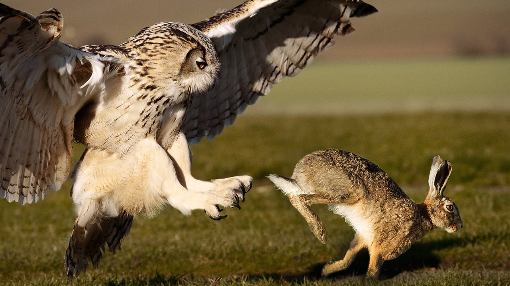

Also known as the tiger owl or hoot owl.These species of birds is mostly found in most parts of America.
This owl has been known to attack people when defending their young, their mates, or their territories. Frequent targets include unsuspecting joggers and hikers. Often victims escape without injury, and deaths from owl attacks are extremely rare.
In 2012,a number of people in a Seattle-area park reported being attacked by a great horned owl that swooped down from the trees.
They usually eat small rodents and birds but have been known to carry off larger prey.
It often grows to more than 2 feet (60 cm) in length, with wingspans that often approach 200 cm (80 inches)and is the second-heaviest owl in North America, after the closely related, but very different-looking snowy owl.
Other types of owls include: